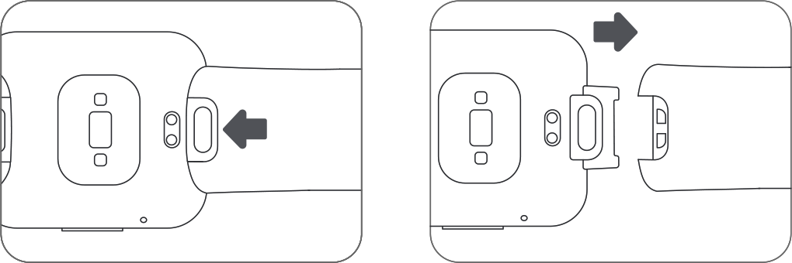

<link href="./assets/css/main.css" rel="stylesheet">

<main class="redmi-watch-2-lite-strap-overview">
            
<div class="section section01 black lazy is-visible" data-type="bg" data-id="0fpxymlt3e" data-background-image="./assets/media/section01.jpg"data-loaded="true" style="background-image: url(./assets/media/section01.jpg);">

<div class="text-content">
<div class="text">

<span data-key="name_1" class="xm-text f72 f-light" data-type="text" data-id="3xefiwxy93">Pulseira para Smartwatch Watch 2 Lite</span>
</div>
<span data-key="ksp_1" class="xm-text f40 f-light frist" data-type="text" data-id="0oye1t6ted">Três cores disponíveis</span>
 
<span data-key="ksp_2" class="xm-text f40 f-light" data-type="text" data-id="e0a2vikaqi">Material agradável à pele</span>
<span data-key="ksp_3" class="xm-text f40 f-light" data-type="text" data-id="oq225ii989">Fácil de vestir</span>
</div></div>
            
<div class="section section02 black lazy is-visible" data-type="bg" data-id="pbxqudm2qq" data-background-image="" data-loaded="true">
              
<div class="text-content">
<span data-key="overview_1" class="xm-text f72 f-light" data-type="text" data-id="ol0ur65k1f">3 cores vibrantes para compor <br> o seu estilo</span>
</div>


<span data-key="overview_4" class="xm-text f34 f-light first" data-type="text" data-id="ojwt4o4dn0">Verde refrescante</span>
<span data-key="overview_5" class="xm-text f34 f-light sec" data-type="text" data-id="vpzhl5scc1">Marrom sofisticado</span>
<span data-key="overview_6" class="xm-text f34 f-light thir" data-type="text" data-id="u6qgwj1mgg">Rosa vibrante</span>
<span data-key="overview_7" class="xm-text f24 f-light tips" data-type="text" data-id="ugzrifbfz1">Escolha a cor que combina mais com você</span>
</div>
    
<div class="section section03 black lazy is-visible" data-type="bg" data-id="osphk1mk9e" data-background-image="" data-loaded="true">
<div class="text-content">
<span data-key="overview_8" class="xm-text f72 f-light" data-type="text" data-id="ts8w8t74dz">Feito de TPU</span>
<span data-key="overview_9" class="xm-text f72 f-light" data-type="text" data-id="ehqjqacl08">Material amigável à pele <br> Mais confortável de vestir </span>
<span data-key="overview_10" class="xm-text f24 f-light desc" data-type="text" data-id="r39mf1ttc6">Flexível | Respirável | Fivela que combina com a cor da pulseira  — Treine todos os dias com conforto e estilo. </span>
</div>

</div>
           
<div class="section section04 black lazy is-visible" data-type="bg" data-id="cjkf3wep7i"  data-background-image="" data-loaded="true">
<div class="text-content">
  
<span data-key="overview_11" class="xm-text f72 f-light" data-type="text" data-id="sk719au1as">Fácil de vestir:</span>
<span data-key="overview_12" class="xm-text f72 f-light" data-type="text" data-id="wiy2mt636r">Pressione e puxe a pulseira para substituir <br> por uma nova </span>

<span data-key="overview_13" class="xm-text f24 f-light desc" data-type="text" data-id="b9jfpqrpc3">O design de alça oculta é sofisticado, moderno e muito prático. Substitua a sua pulseira por uma nova em apenas três passos. </span></div>


              
<div class="item">
<span data-key="overview_14" class="xm-text f36 f-regular" data-type="text" data-id="orc8qp2vv4">Pulseira Ajustável de 140 a 210mm </span>
<span data-key="overview_15" class="xm-text f24 f-regular mt24" data-type="text" data-id="t4cdx7prrl">
Encontre o ajuste perfeito para a circunferência do seu pulso. </span></div>
              
<div class="item mt36 sec">

<span data-key="overview_16" class="xm-text f36 f-regular" data-type="text" data-id="m9nybo61pq">Retirando e vestindo a Pulseira </span>
<span data-key="overview_17" class="xm-text f24 f-regular mt24" data-type="text" data-id="jr7d0u17o6">
1. Segure a fivela de liberação rápida com uma mão e remova a pulseira com a outra. </span>

<span  data-key="overview_18" class="xm-text f24 f-regular" data-type="text" data-id="9bq03gg4nd">
2. Insira a pulseira na fivela de liberação rápida e empurre até ouvir um clique, indicando que a pulseira foi encaixada. Puxe-a sutilmente para garantir o encaixe perfeito. </span>

<span class="xm-text f24 f-light tips" style="font-style: italic; margin: 15px;"> As imagens desta página são apenas para referência.<br>O produto real pode variar dependendo da iluminação e ângulo de visão. Por favor, consulte o produto real.</span>
</div></div>
</main>

<script src="./assets/js/window.js"></script>